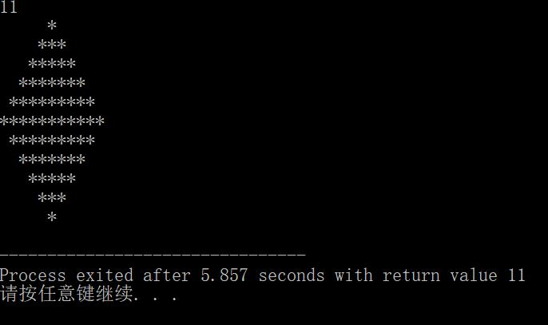

#include#include int main() { int h,r,c; scanf("%d",&h); if(h%2!=0) { for(r=1;r<=h;r++) { for(c=1;c<=fabs(r-(h+1)/2);c++) { printf(" "); } for(c=fabs(r-(h+1)/2)+1;c<=-fabs(r-(h+1)/2)+h;c++) { printf("*"); } printf("\n"); } } else printf("no answer"); }